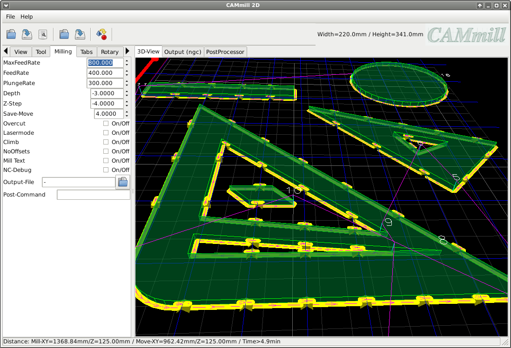

Milling
Milling parameters
MaxFeedRate:
Calculated maximum feed in mm / minute (ReadOnly)
FeedRate:
Feed rate in mm / minute
PlungeRate:
Vertical feed rate in mm / minute
Depth:
Milling depth in mm (negative)
:
Milling depth per pass in mm (negative)
Safe-Move:
Distance to the material for fast movements in mm (positive)
Overcut:
For milling out inner edges that cannot be reached due to the tool radius (can be overwritten per object)
Lasermode:
The 'tool' is moved to Z0.0 and switched on and off for each milling path (can be overwritten per object)
Climb:
Down-cut milling, the workpiece is moved in the direction of rotation of the milling cutter (can be overwritten per object)
NoOffsets:
All offsets are deactivated, e.g. for engraving contours (can be overwritten per object)
Mill Text:
MTEXT elements from DXF files are treated as milling paths
NC-Debug:
Only for checking the milling data output, all contours are also transferred without offsets
Output-File:
Output file path
Post-Command:
A command that is executed after the output has been saved, e.g. to copy the file to the CNC machine (copy2cnc.sh% s)